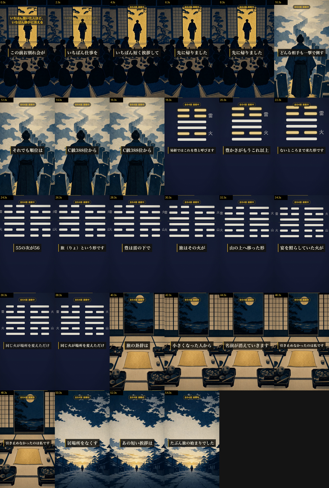

55.6秒 ／ 独立採点 90点・両ゲート通過 ／ 公開枠 2026-08-05 05:00 JST（本編8/4公開の翌朝）
| S01 身に覚え | この前、お別れ会がありましたいちばん仕事を回していた人がいちばん短く挨拶して先に帰りました |
| S02 作品に最小着地 | ワンパンマンのサイタマはどんな相手も一撃で倒すそれでも順位はC級388位から |
| S03 卦の提示 | 易経では、これを豊と呼びます豊かさが、もうこれ以上ないところまで来た形です |
| S04 隣の卦＝へえの本体 | 55の次が、56旅（りょ）という形です豊は、雷の下で火が燃えている形旅は、その火が山の上へ移った形宴を照らしていた火が遠い山で燃えている同じ火が、場所を変えただけ |
| S05 刃を自分へ | 旅の卦辞は「小さくあることで通る」小さくなった人から名前が消えていきます引き止めなかったのは、私です |
| S06 断言＋ループ | 極めた人ほど居場所をなくすあの短い挨拶はたぶん、旅の始まりでした |
豊は、雷の下で火が燃えている形。旅は、その火が山の上へ移った形。宴を照らしていた火が、遠い山で燃えている——同じ火が、場所を変えただけ。
これは db の上下卦（豐＝震・雷／離・火、旅＝離・火／艮・山）そのままで、比喩ではありません。六爻図がその物証です。
最初は「上下ひっくり返すと旅になる」を軸にしていましたが、採点で「上下反転は序卦のほぼ全ペアが持つ一般則で、豊と旅の固有の発見になっていない。調べた視聴者に崩される」と指摘され、火の位置へ差し替えました。

| 指摘 | 対応 |
|---|---|
| 作品事実に出典がない | _facts.work に一次情報の出典URLと引用を記録 |
| 旅の卦辞を命令形に言い換えている | 「小さくあることで通る」と記述へ戻す |
| 字幕が文をまたいで癒着（「形卦辞は真昼の」等） | 1 sub = 1行を厳守する構造修正（全ショートに効く） |
| 六爻図のラベルが画面端で切れる／字幕帯が爻を覆う | clamp＋位置調整（同上） |
| 上部バッジ「全64話 連載中」が未実装だった | SeriesBadge を実装（規則が実装されていなかった） |
| 「へえ」が一般則で固有性がない | 火の位置＝豊と旅にしか言えない証拠へ差し替え |
残る改善（採点が挙げた・今回は未対応）：S03の6.5秒が情報として死んでいる／「〜という形です」が4回反復して解説者の口に寄る／六爻図のズーム開始側でラベルが切れる。次のショートで直します。